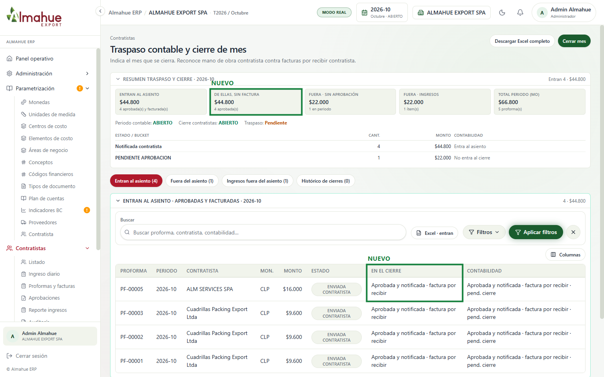

Contratistas › Traspaso contable y cierre de mes


- Entran al asiento las aprobadas del mes (DEFINITIVA y ENVIADA CONTRATISTA) y las FACTURADA. En 2026-10 hay 4 notificadas, $44.800, todas sin factura: el gasto queda en octubre.
- La columna En el cierre las etiqueta (aprobada y notificada · factura por recibir). PENDIENTE APROBACION $22.000 queda fuera.
- No se apretó Cerrar mes, Descargar Excel ni Guardar cuentas.